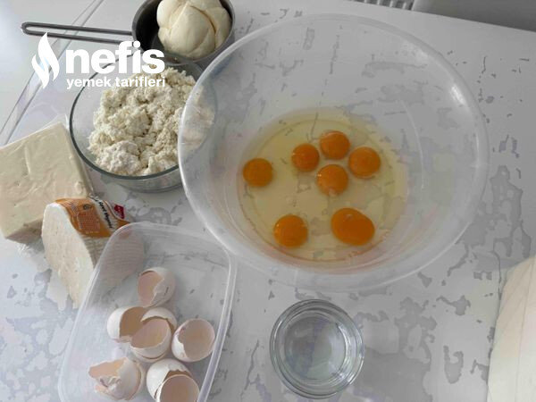

🍽️ 8-10 kişilik⏱️ Hazırlık: 15 dk🔥 Pişirme: 30 dk🏷️ Hamur İşi Tarifleri🏷️ Börek Tarifleri
Malzemeler
- 300 gram lor
- 250 gram tulum peyniri
- 250 gram beyaz peynir
- Maydanoz
- 7 adet yumurta
- 1 kaşık zeytinyağı
- 1 tatlı kaşığı tuz
- 1 kahve fincanı kadar su
- Alabildiği kadar un
- 250-300 gram az eritilmiş tereyağı
- 1 bardak kadar nişasta
Hazırlanışı
- Önce yumurtaları kırıyoruz, 1 kaşık kadar zeytinyağı, 1 tatlı kaşığı tuz ekleyip çırpıyoruz, çok az su ve unu ekleyip orta sert bir hamur tutup üzerini örtüp dinlenmeye bırakıyoruz.
- Bu arada haşlayacağımız suyu tencereye alıp, 1 fincan kadar iri tuz atıp kaynamaya bırakıyoruz. Soğuk suyu da büyükçe bir kaba hazırlıyoruz. Sininin üzerine kevgiri hazırlıyoruz. Sofra bezini de tezgaha serip hazırlıyoruz.
- Bu arada peynirleri rendeleyip karıştırıyoruz. Maydanozları irice doğruyoruz.
- Dinlenen hamurumuzu 4 küçük beze, kalanı da 6-7 büyük bezeye bölüp yuvarlıyoruz. Dinlenen 2 hamurunuzu ince açıp yağlanmış tepsiye yerleştiriyoruz. Üzerine maydanozları serpeliyoruz. Üzerine hafif eritilmiş tereyağ gezdiriyoruz.
- Sonra haşlayacağımız hamurları açmaya (unlayarak) başlıyoruz. Açtığımız yufkayı kaynayan tuzlu suya bırakıyoruz. 30-40 saniye bekletip iki kevgir yardımıyla soğuk suya alıyoruz. Çok bekletmeden kevgirin üzerine çıkarıyoruz. Oradan sofra bezine çıkarıp fazla suyunu elbezi ile alıyoruz.
- Sonra diğer yufkaların üzerine yerleştirip üzerini eritilmiş tereyağı ile hafif yağlayıp aynı şekilde haşladığımız yufkayı yerleştirip üzerine hazırladığımız peynirin bir kısmını serpeliyoruz.
- Bezeler biteseye kadar iki yufka koyup peynir koymaya ve aralarına yağ serpmeye devam ediyoruz.
- Kalan iki küçük yufkayı da nişasta yardımıyla açıp üzerine yerleştiriyoruz. Üzerini erimiş tereyağı ile yağlayıp kesiyoruz.
- 180 derece fırında alt- üst ayarda, altı üstü kızarana kadar 30 dakika kadar ( kontrollü bir şekilde) pişiriyoruz.
- Nefis böreğimizi fırından çıktıktan sonra biraz dinlendirip, kestiğimiz yerlerden bir daha kesip servis yapıyoruz. Afiyet olsun😊